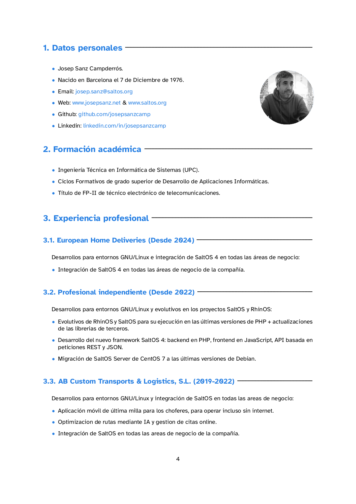
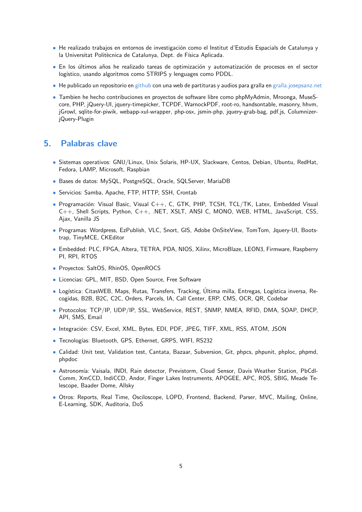
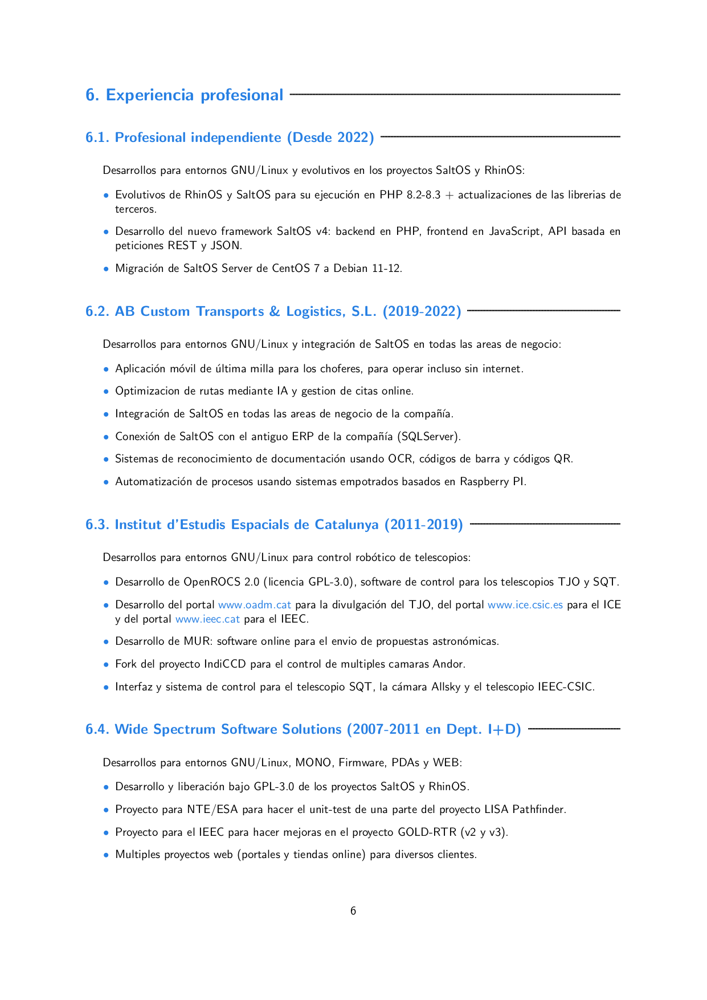
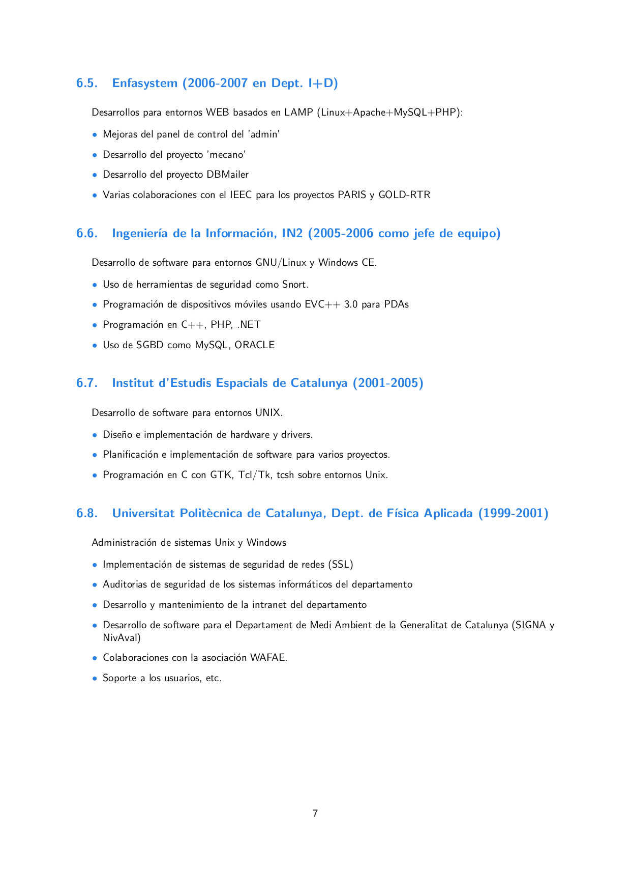
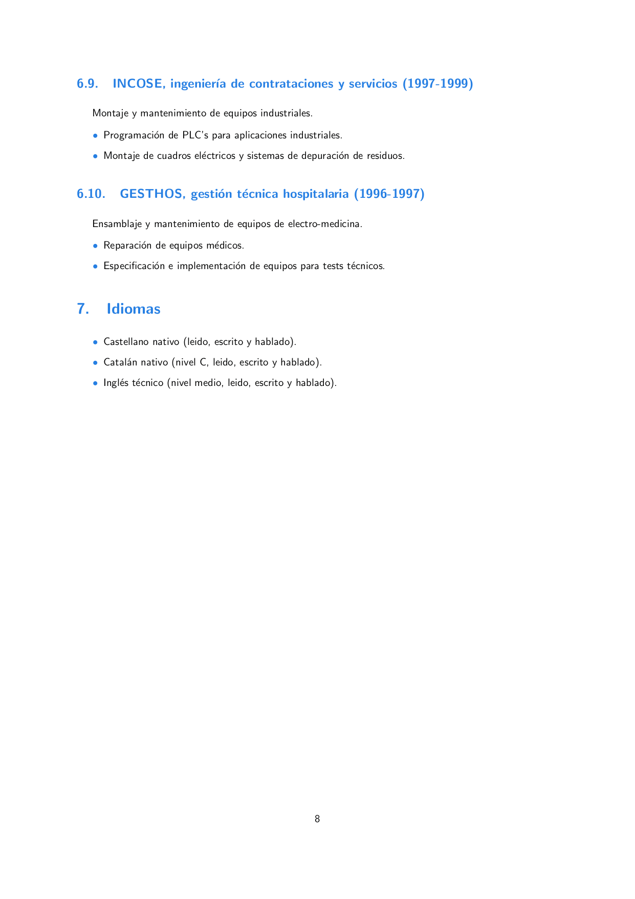

    
1. Datos personales
• Josep Sanz Campderrós.
• Nacido en Barcelona el 7 de Diciembre de 1976.
• EMail: josep.sanz@saltos.org
• Web: www.josepsanz.net & www.saltos.org
• Github: github.com/josepsanzcamp
• Sourceforge: sourceforge.net/u/josepsanzcamp
• Linkedin: linkedin.com/in/josepsanz
2. Formación académica
• Ingenierı́a Técnica en Informática de Sistemas (UPC).
• Ciclos Formativos de grado superior de Desarrollo de Aplicaciones Informáticas.
• Tı́tulo de FP-II de técnico electrónico de telecomunicaciones.
3. Otros cursos y seminarios
• Curso básico de AutoCAD
• Permiso de conducir B1
• Seminario de seguridad en redes informáticas
• Programación en Java Distribuido con CORBA
• Seminario de FPGA’s ALTERAz
• Seminario de Echelon - Lonworks
• Seminario aplicación Ley Orgánica de Protección de Datos (LOPD).
4. Otros datos de interés
• A lo largo de mi carrera profesional, casi siempre he realizado tareas de I+D+i (Investigación, Desarrollo
e Innovación).
• Llevo 25 años trabajando en entornos Unix y GNU/Linux, he participado en proyectos de automatización
de procesos y procesado de datos masivos (OpenROCS, control de motores y telescopios astronómicos),
desarrollos de backends y fronends (SaltOS, RhinOS y apps a medida para web y para escritorio) y
programación para sistemas empotrados (Altera, Xilinx, Arduino y Raspberry pi).
• En el proyecto empresarial Wide Spectrum Software Solutions, dirigı́ los proyectos SaltOS y RhinOS,
ası́ como su liberación bajo la licencia GPL-3.0, en la actualizad continuo desarrollando en estos pro-
yectos.
• He sido miembro de la junta directiva de CatPL, asociación de Empresas Catalanas de Software Libre
y he impartido charlas sobre software libre.
4
• He realizado trabajos en entornos de investigación como el Institut d’Estudis Espacials de Catalunya y
la Universitat Politècnica de Catalunya, Dept. de Fı́sica Aplicada.
• En los últimos años he realizado tareas de optimización y automatización de procesos en el sector
logı́stico, usando algoritmos como STRIPS y lenguages como PDDL.
• He publicado un repositorio en github con una web de partituras y audios para gralla en gralla.josepsanz.net
• Tambien he hecho contribuciones en proyectos de software libre como phpMyAdmin, Mroonga, MuseS-
core, PHP, jQuery-UI, jquery-timepicker, TCPDF, WarnockPDF, root-ro, handsontable, masonry, hhvm,
jGrowl, sqlite-for-piwik, webapp-xul-wrapper, php-osx, jsmin-php, jquery-grab-bag, pdf.js, Columnizer-
jQuery-Plugin
5. Palabras clave
• Sistemas operativos: GNU/Linux, Unix Solaris, HP-UX, Slackware, Centos, Debian, Ubuntu, RedHat,
Fedora, LAMP, Microsoft, Raspbian
• Bases de datos: MySQL, PostgreSQL, Oracle, SQLServer, MariaDB
• Servicios: Samba, Apache, FTP, HTTP, SSH, Crontab
• Programación: Visual Basic, Visual C++, C, GTK, PHP, TCSH, TCL/TK, Latex, Embedded Visual
C++, Shell Scripts, Python, C++, .NET, XSLT, ANSI C, MONO, WEB, HTML, JavaScript, CSS,
Ajax, Vanilla JS
• Programas: Wordpress, EzPublish, VLC, Snort, GIS, Adobe OnSiteView, TomTom, Jquery-UI, Boots-
trap, TinyMCE, CKEditor
• Embedded: PLC, FPGA, Altera, TETRA, PDA, NIOS, Xilinx, MicroBlaze, LEON3, Firmware, Raspberry
PI, RPI, RTOS
• Proyectos: SaltOS, RhinOS, OpenROCS
• Licencias: GPL, MIT, BSD, Open Source, Free Software
• Logı́stica: CitasWEB, Maps, Rutas, Transfers, Tracking, Última milla, Entregas, Logı́stica inversa, Re-
cogidas, B2B, B2C, C2C, Orders, Parcels, IA, Call Center, ERP, CMS, OCR, QR, Codebar
• Protocolos: TCP/IP, UDP/IP, SSL, WebService, REST, SNMP, NMEA, RFID, DMA, SOAP, DHCP,
API, SMS, Email
• Integración: CSV, Excel, XML, Bytes, EDI, PDF, JPEG, TIFF, XML, RSS, ATOM, JSON
• Tecnologı́as: Bluetooth, GPS, Ethernet, GRPS, WIFI, RS232
• Calidad: Unit test, Validation test, Cantata, Bazaar, Subversion, Git, phpcs, phpunit, phploc, phpmd,
phpdoc
• Astronomı́a: Vaisala, INDI, Rain detector, Previstorm, Cloud Sensor, Davis Weather Station, PbCdl-
Comm, XmCCD, IndiCCD, Andor, Finger Lakes Instruments, APOGEE, APC, ROS, SBIG, Meade Te-
lescope, Baader Dome, Allsky
• Otros: Reports, Real Time, Osciloscope, LOPD, Frontend, Backend, Parser, MVC, Mailing, Online,
E-Learning, SDK, Auditoria, DoS
5
6. Experiencia profesional
6.1. Profesional independiente (Desde 2022)
Desarrollos para entornos GNU/Linux y evolutivos en los proyectos SaltOS y RhinOS:
• Evolutivos de RhinOS y SaltOS para su ejecución en PHP 8.2 + actualizaciones de las librerias de
terceros.
• Desarrollo del nuevo framework SaltOS v4: backend en PHP, frontend en JavaScript, API basada en
peticiones REST y JSON.
• Migración de SaltOS Server de CentOS 7 a Debian 11.
6.2. AB Custom Transports & Logistics, S.L. (2019-2022)
Desarrollos para entornos GNU/Linux y integración de SaltOS en todas las areas de negocio:
• Aplicación móvil de última milla para los choferes, para operar incluso sin internet.
• Optimizacion de rutas mediante IA y gestion de citas online.
• Integración de SaltOS en todas las areas de negocio de la compañı́a.
• Conexión de SaltOS con el antiguo ERP de la compañı́a (SQLServer).
• Sistemas de reconocimiento de documentación usando OCR, códigos de barra y códigos QR.
• Automatización de procesos usando sistemas empotrados basados en Raspberry PI.
6.3. Institut d’Estudis Espacials de Catalunya (2011-2019)
Desarrollos para entornos GNU/Linux para control robótico de telescopios:
• Desarrollo de OpenROCS 2.0 (licencia GPL-3.0), software de control para los telescopios TJO y SQT.
• Desarrollo del portal www.oadm.cat para la divulgación del TJO, del portal www.ice.csic.es para el ICE
y del portal www.ieec.cat para el IEEC.
• Desarrollo de MUR: software online para el envio de propuestas astronómicas.
• Fork del proyecto IndiCCD para el control de multiples camaras Andor.
• Interfaz y sistema de control para el telescopio SQT, la cámara Allsky y el telescopio IEEC-CSIC.
6.4. Wide Spectrum Software Solutions (2007-2011 en Dept. I+D)
Desarrollos para entornos GNU/Linux, MONO, Firmware, PDAs y WEB:
• Desarrollo y liberación bajo GPL-3.0 de los proyectos SaltOS y RhinOS.
• Proyecto para NTE/ESA para hacer el unit-test de una parte del proyecto LISA Pathfinder.
• Proyecto para el IEEC para hacer mejoras en el proyecto GOLD-RTR (v2 y v3).
• Multiples proyectos web (portales y tiendas online) para diversos clientes.
6
6.5. Enfasystem (2006-2007 en Dept. I+D)
Desarrollos para entornos WEB basados en LAMP (Linux+Apache+MySQL+PHP):
• Mejoras del panel de control del ’admin’
• Desarrollo del proyecto ’mecano’
• Desarrollo del proyecto DBMailer
• Varias colaboraciones con el IEEC para los proyectos PARIS y GOLD-RTR
6.6. Ingenierı́a de la Información, IN2 (2005-2006 como jefe de equipo)
Desarrollo de software para entornos GNU/Linux y Windows CE.
• Uso de herramientas de seguridad como Snort.
• Programación de dispositivos móviles usando EVC++ 3.0 para PDAs
• Programación en C++, PHP, .NET
• Uso de SGBD como MySQL, ORACLE
6.7. Institut d’Estudis Espacials de Catalunya (2001-2005)
Desarrollo de software para entornos UNIX.
• Diseño e implementación de hardware y drivers.
• Planificación e implementación de software para varios proyectos.
• Programación en C con GTK, Tcl/Tk, tcsh sobre entornos Unix.
6.8. Universitat Politècnica de Catalunya, Dept. de Fı́sica Aplicada (1999-2001)
Administración de sistemas Unix y Windows
• Implementación de sistemas de seguridad de redes (SSL)
• Auditorias de seguridad de los sistemas informáticos del departamento
• Desarrollo y mantenimiento de la intranet del departamento
• Desarrollo de software para el Departament de Medi Ambient de la Generalitat de Catalunya (SIGNA y
NivAval)
• Colaboraciones con la asociación WAFAE.
• Soporte a los usuarios, etc.
7
6.9. INCOSE, ingenierı́a de contrataciones y servicios (1997-1999)
Montaje y mantenimiento de equipos industriales.
• Programación de PLC’s para aplicaciones industriales.
• Montaje de cuadros eléctricos y sistemas de depuración de residuos.
6.10. GESTHOS, gestión técnica hospitalaria (1996-1997)
Ensamblaje y mantenimiento de equipos de electro-medicina.
• Reparación de equipos médicos.
• Especificación e implementación de equipos para tests técnicos.
7. Idiomas
• Castellano nativo (leido, escrito y hablado).
• Catalán nativo (nivel C, leido, escrito y hablado).
• Inglés técnico (nivel medio, leido, escrito y hablado).
8